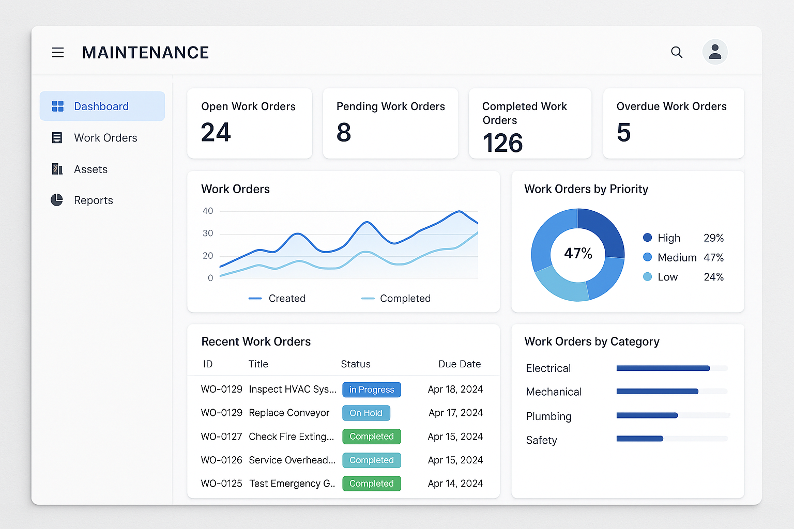

Une plateforme SaaS mobile et puissante pour gérer vos interventions, techniciens et pièces détachées.
Demander une démo
Matx centralise toutes vos opérations de maintenance, en temps réel, avec une traçabilité totale.
Créez, assignez et suivez vos interventions avec un workflow structuré.
Les techniciens reçoivent les tickets sur mobile, ajoutent photos, signatures et compte-rendu.
Suivi en temps réel des pièces utilisées lors des interventions.
Chaque acteur (opérateur, technicien, superviseur) a son espace dédié.
Suivez vos indicateurs clés : temps de réparation, fréquence des pannes, etc.
À venir : suggestions automatiques de pièces, analyse de comptes-rendus.
Testez Matx dès aujourd’hui ou planifiez une démonstration personnalisée.
Demander une démo